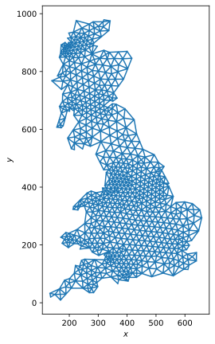
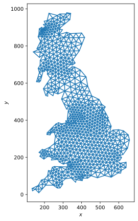
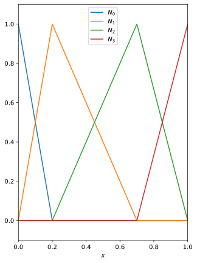
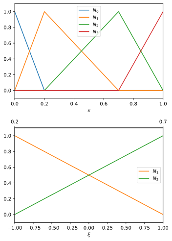
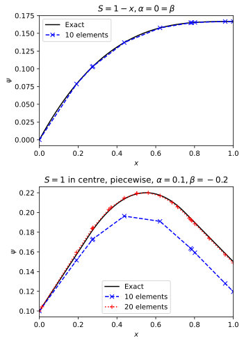

Nodes vs elements

Shape functions \(N_A(x)\) take PDE to
\[ \sum_A K_{AB} \psi_A = F_B \, . \]
\(\psi_A\) are nodal values of \(\psi\).
\(K_{AB}\) from all overlapping shape functions at node.
Gets too complex when

Focus on one element only.
\[ x \in [x_A, x_{A+1}] \to \xi \in [-1, 1]. \]
Two shape functions in element,
\[ N_a = \tfrac{1}{2} (1 + \xi_a \xi), \quad a = 1, 2 \, . \]
These contribute to element stiffness
\[ \begin{aligned} k^{(e)}_{ab} &= \int_{x_A}^{x_{A+1}} \mathrm{d}x \, \partial_x N_a \partial_x N_b \\ &= \int_{-1}^1 \mathrm{d}\xi (\partial_\xi x)^{-1} \partial_\xi N_a \partial_\xi N_b \\ &= \frac{(-1)^{a+b}}{x_{A+1} - x_A} \, . \end{aligned} \]

All \(k^{e}_{ab}\) add up to \(K_{AB}\). Need \(\{a\}\to\{A\}\) map.
No formula: set location matrix LM s.t.
\[ K_{LM(a, e), LM(b, e)} = K_{LM(a, e), LM(b, e)} + k^{(e)}_{ab} \, . \]
In 1d
Write \(S(x) = \sum_a S_a N_a(x)\) in element.
\[ \begin{aligned} f^{(e)}_b &= \int_0^1 \mathrm{d}x N_b(x) S(x) \\ &= \sum_a \int_{-1}^1 \mathrm{d}\xi (\partial_\xi x) N_b N_a S_a \\ & \simeq \frac{x_{A+1} - x_A}{6} \begin{pmatrix} 2 S_1 + S_2 \\ S_1 + 2 S_2 \end{pmatrix} \end{aligned} \]
Better Gauss quadrature methods work for higher accuracy bases.
Assembly: \[ F_{LM(b, e)} = F_{LM(b, e)} + f^{(e)}_{b} \, . \]
Weak form includes \([ w(x) \partial_x \psi(x) ]_0^1\).
\[ \partial_x \psi|_{x=1} = \beta \quad \implies \quad F_C = F_C + \beta \]
where \(x_C = 1\).
\[ \psi_{x=0} = \alpha \quad \implies \quad F_C = F_C - \alpha k^{(e)}_{12} \]
where \(e\) is the element at boundary, \(x_C\) in \(e\), not at boundary.
Ne = 10
nodes = np.array([0, *sorted(np.random.rand(Ne-1)), 1])
LM = np.zeros((2, Ne), dtype=np.int64)
for e in range(Ne):
if e==0:
LM[0, e] = -1
LM[1, e] = 0
else:
LM[0, e] = LM[1, e-1]
LM[1, e] = LM[0, e] + 1
K = np.zeros((Ne, Ne))
F = np.zeros((Ne,))
for e in range(Ne):
k_e = stiffness(nodes[e:e+2])
f_e = force(nodes[e:e+2], S)
for a in range(2):
A = LM[a, e]
for b in range(2):
B = LM[b, e]
if (A >= 0) and (B >= 0):
K[A, B] += k_e[a, b]
if (A >= 0):
F[A] += f_e[a]
# Modify force vector for Dirichlet BC
if e == 0:
F[0] -= alpha * k_e[1, 0]
# Modify force vector for Neumann BC
F[-1] += beta
# Solve
Psi_A = np.zeros_like(nodes)
Psi_A[0] = alpha
Psi_A[1:] = np.linalg.solve(K, F)